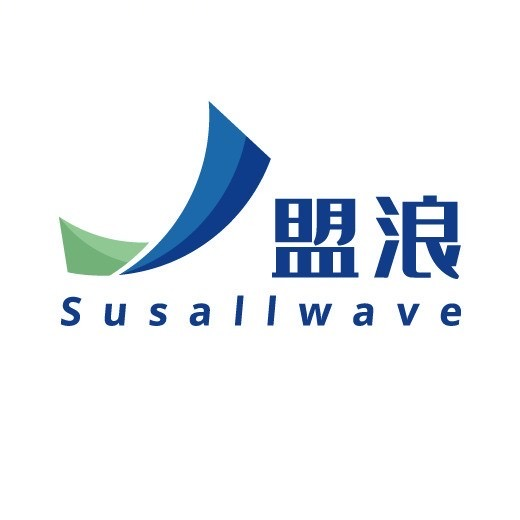

Nov 29th 2023
EXPERIENCES
University of Miami Herbert Business School
Student Managed Conviction Fund | Analyst
Aug 2024 - Present
Miami, Florida, United States · On-site
Skills: Pricing Analysis, Financial Concepts, Market Pricing, Macroeconomics Analysis, P/E P/B Ratio Evaluation, DCF, DDM
Curveway Confluence Big Data Investment Center
Systems Maintenance Specialist
Freelance
Jul 2024 - Present
Remote
1. Assist in the daily maintenance of the quantitative analysis module, information system, and subscription system, addressing unexpected issues.
2. Participate in the development of new systems and modules.
Skills: Python, Financial Concepts, HTML Emails, JavaScript, Raspberry Pi, HTML, C++, Website Development, CSS, Quantitative Finance
Investment Analysis Assistant
Internship
Dec 2023 - Jul 2024
Guangzhou, Guangdong, China · On-site
1. Built a model using Python to update, cross-verify, and analyze data.
2. Used PCA to predict trends in Southeast Asian markets.
3. Completed commodity analysis on gold and eggs.
4. Developed a quantitative analysis system, a mail subscription & bot push system, and a stock recommendation system.
Skills: Python, Data Analysis, SQL, VBA Excel, Financial Concepts, Quantitative Analytics, Commodity Pricing, Tableau, Industry Analysis, Quantitative Research
Click on the pictures below to see details:
Dec 27th 2023
Evergrande's dusk: bonds and commercial bills-2023122721570002-PRDV
Paradox Interactive
China Community Ambassador
Freelance
May 2024 - Present
Remote
1. Independently built a QQ Channel community system, creating an efficient communication channel between domestic players and the Stellaris development team.
2. Scraped community comments to generate weekly reports on community sentiment and bug reports.
3. Regularly assisted in translating developer diaries, Q&A, and promotional materials, while addressing player inquiries in the community.
Skills: Community Management, Data Crawling & Analysis, Translation, Technical Writing
Guangdong Haid Group Co., Limited
Commodity Intern
Internship
Jul 2023 - Nov 2023
Guangzhou, Guangdong, China · On-site
1. Refined hedging models and analyzed data for the hog farming department.
2. Used Python and VBA for daily automatic updates of reports.
3. Conducted on-site research on hog farming enterprises.
Skills: Commodity Markets, Python, Data Analysis, VBA Excel, Financial Concepts, Pricing Strategy, Commodity Pricing, Industry Analysis

SusallWave Digital Technology Co., Ltd.
ESG Risk Analysis Intern
Internship
Mar 2023 - May 2023
Guangdong, China · On-site
1. Extracted 3000+ negative information pieces from government websites using Requests and Selenium.
2. Conducted correlation analysis among companies using Python and Apriori algorithm.
Skills: Web Crawling, Python, Data Analysis
CnOpenData
Data Assistant
Internship
Oct 2022 - Apr 2023
Guangzhou, Guangdong, China · Remote
1. Expanded industry database categories and improved data for six databases.
2. Used Python to collect, organize, and normalize 169,700 index entries.
Skills: Data Mining, Python, Data Analysis, SQL